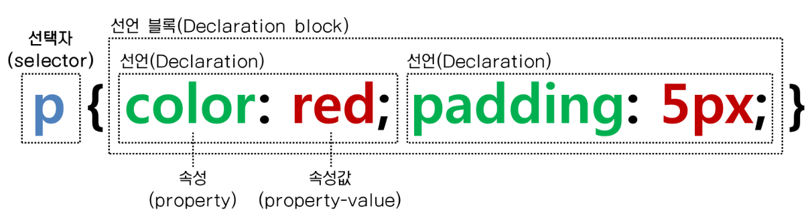
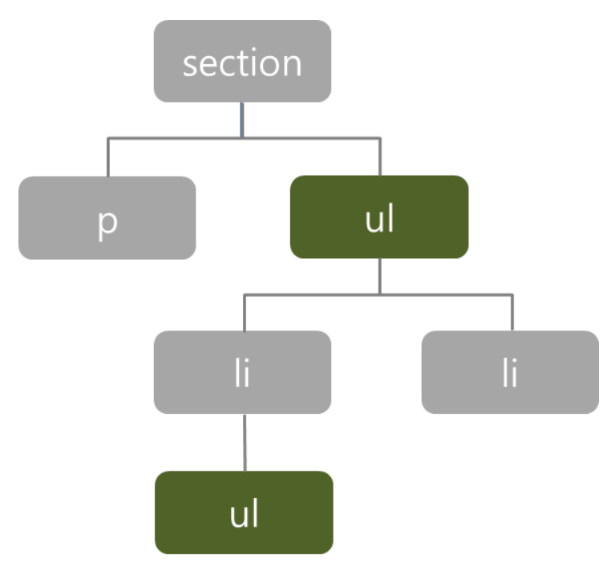
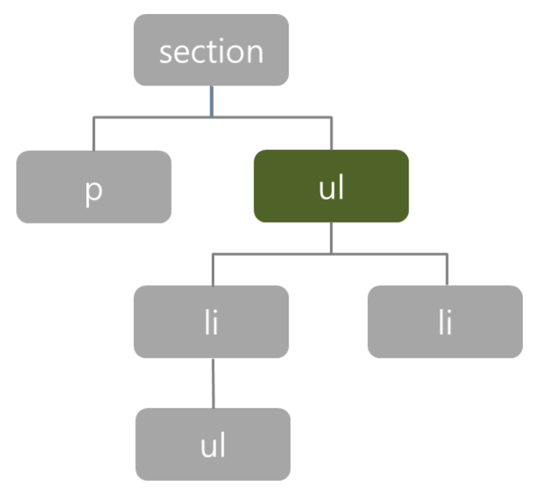
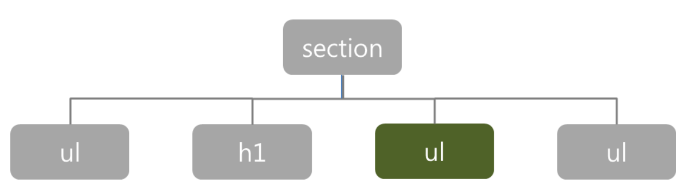
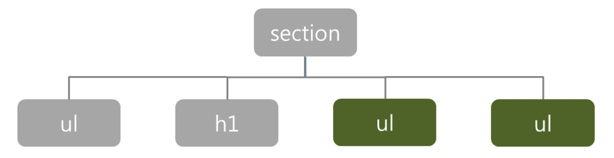

선택자는 HTML페이지의 특정요소를 '선택'하여 스타일을 적용시켜주는 역할을 합니다.
CSS문장의 제일 앞 부분에 위치한 요소가 바로 선택자 입니다.
이를 통해 HTML페이지 안의 특정 요소들을 선택해서 선언 블록(Declaration Block)의 내용을 적용 시켜 줍니다.
* { margin: 0;}
전체 선택자는 HTML페이지의 모든 요소(태그)에 같은 CSS속성을 적용합니다.
때문에 보통 margin이나 padding값을 초기화 하는 등 주로 기본 값 설정 시에 사용 합니다.
하지만 전체 선택자를 사용하면 문서 안의 모든 요소를 읽어 내려야 하므로 페이지의 로딩 속도가 느려질 수 있습니다.
따라서, 좀 더 신중하게 사용해야 하는 선택자입니다.
p { color: red;}
태그 선택자는 HTML에서 사용하는 태그 이름을 이용해 해당 태그 모두를 선택합니다.
따라서 위 예시의 경우에는 해당 HTML페이지의 모든 p태그에 스타일이 적용됩니다.
.class1 {color: red;}
div.class1 {color : red;}
<!-- HTML -->
<p class="class1"> p class1 </p>
<p class="class2"> p class2 </p>
<div class="class1"> div class1 </div>
p class1
p class2
div class1
클래스 선택자는 마침표에 class 속성 값을 추가해 이용합니다.
이때 해당 값을 class 속성 값으로 가진 HTML 요소를 찾아 선택합니다.
첫번째 예시의 경우는 class1이라는 class 속성 값을 가진 모든 태그를 선택합니다.
두번째 예시의 경우는 특정 태그를 지정하여 class2라는 class 속성 값을 가진 태그 중 div 태그만을 선택하게 됩니다.
따라서 첫번째 예시의 경우에는
#id1 {color: red;}
<!-- HTML -->
<p id="id1"> p id1 </p>
<p> p </p>
p id1
p
ID 선택자는 마침표 대신 #을 사용하고, class속성 대신 id속성을 이용한다는 점을 제외하면 클래스 선택자와 거의 유사합니다.
주로 한 페이지 내에 여러번 반복하여 사용할 스타일은 클래스 선택자를 이용하고, 단 한번 사용할 스타일은 ID 선택자를 이용합니다.
이는 다음과 같은 두 속성의 차이 때문입니다.
class 속성은 어떤 분류 안에 포함된 요소의 특성을 정의하는 데 사용됩니다.
이와 달리 id 속성은 어떤 요소에 대해 유일한 특성을 정의합니다. (HTML 문서에서 특정 id속성 값은 단 하나만 존재해야 합니다.
복합 선택자는 2개 이상의 선택자 요소가 모인 선택자입니다.
section ul {}
하위 선택자는 앞에 나온 선택자를 기준으로 모든 하위 요소에 스타일을 적용합니다.
위의 예시에서는 section태그의 하위 요소 중 모든 ul태그에 스타일이 적용됩니다.
section>ul {}
태그들의 포함관계에서 포함하는 요소를 부모 요소, 포함되는 요소를 자식 요소라고 합니다.
따라서, 자식 선택자의 경우에는 하위 선택자와는 다르게 모든 하위 요소가 아닌 바로 아래 자식 요소에만 스타일을 적용합니다.
위의 예시에서는 section태그 바로 아래의 ul태그에만 스타일이 적용됩니다.
h1+ul {}
같은 부모 요소를 가지는 요소들을 형제 관계라고 합니다.
이때 HTML문서에 먼저 쓰여진 요소를 형 요소, 나중에 쓰여진 요소를 동생 요소라고 합니다.
인접 형제 선택자의 경우에는 형 요소 + 동생 요소의 형태로 사용되며, 형 요소 바로 다음에 위치하는 동생 요소에만 스타일이 적용됩니다.
위의 예시에서는 h1태그 바로 다음에 나오는 ul태그에만 스타일이 적용됩니다.
h1~ul {}
일반 형제 선택자의 경우는 형 요소 ~ 동생 요소의 형태로 사용되며, 형 요소 뒤에 나오는 모든 동생요소에 스타일이 적용됩니다.
위의 예시에서는 h1태그 뒤에 나오는 모든 ul태그에 스타일이 적용됩니다.
a[href] {color: red;}
input[type="text"] {font-size: 50px;}
<!-- HTML -->
<a href="www.google.com"> a href </a>
<input type="text">
<input type="button">
a href
속성 선택자는 모두 태그 명과 대괄호 안의 속성 값을 이용하며, 다양한 사용법들이 있습니다.
그 중에서 대표적인 2가지 방법을 예시를 통해 알아보겠습니다.
우선 첫번째 방법은 태그명과 속성을 이용하는 방법으로, 위의 예시의 경우 a태그 중 href라는 속성을 가지고 있는 모든 요소에 스타일이 적용됩니다.
두번째 방법은 선택한 태그가 속성과 그 속성이 가지고 있는 값이 모두 같은 경우에만 적용되는 방법입니다.
위의 예시에서는 input태그 중 type속성을 가지고 있고, 그 값이 text인 input태그에만 스타일이 적용됩니다.
div:hover {color: red;}
div hover
가상 클래스는 웹 문서의 소스에는 실제로 존재하지 않지만, 필요에 의해 임의로 가상의 선택자를 지정하여 사용하는 것을 말합니다.
위의 예시에 있는 :hover선택자는 '마우스 포인터가 해당 요소 위에 올라가 있는 상태'를 선택합니다.
그래서 해당 요소위에 마우스 포인터가 올라가면 스타일이 적용되고, 마우스 포인터가 떨어지면 스타일이 적용되지 않습니다.
선택자는 어떤 종류의 선택자를 이용하는 지에 따라 적용 시 우선순위가 존재합니다.
보통 선택자가 보다 더 일반적인 선택을 하는 경우 우선 순위가 밀려납니다.
이에 따른 선택자들의 우선순위는 다음과 같습니다.
div { margin: 0 !important;}
위와 같은 방식으로 사용하게 되면 다른 선택자보다 항상 우선적으로 적용됩니다.